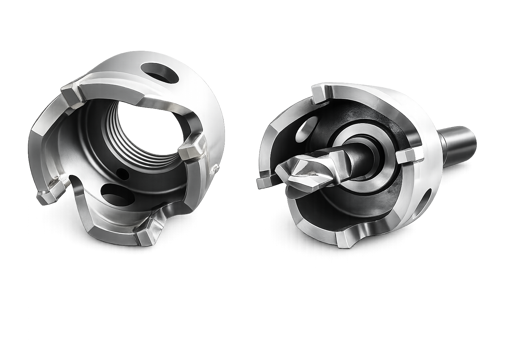

Annular & Profile Cutters
Cutters
High-precision annular and profile cutters for both pipe cold cutting and hot tapping machines — engineered for fast, clean and reliable cutting across a wide range of pipe diameters and wall thicknesses.
We manufacture two families of cutters for leading OEM machines: angle milling cutters for FEIN pipe cold cutting & beveling machines, and annular cutters for T.D. Williamson hot tapping & isolation machines.
Contact us
Angle milling cutters for FEIN machines
Profile / angle milling cutters manufactured to fit FEIN pipe cold cutting & beveling machines. They handle edge preparation and machine a clean, weld-ready bevel across a wide range of pipe diameters and wall thicknesses.

Annular cutters for T.D. Williamson machines
Annular cutters (hole-saw type) manufactured to fit T.D. Williamson hot tapping & isolation machines. They cut the branch outlet through the pipe wall on live, pressurized pipelines without interrupting flow, retaining the cut-out coupon.